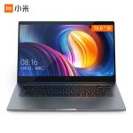

Xiaomi Mi Notebook Air Laptop Thin and Light 13.3 Inch i7-7500U 8GB DDR4 256GB SSD Windows10 MX150 2GB GDDR5 Fingerprint Recognize
Xiaomi Air laptop defines truly connected mobility. With its 7th Intel i7-7500U CPU processor, this ultra-thin and light portable laptop takes you go further, giving you an always on, always connected experience. It also boosts a battery life that lasts 9.5 hours for longer using. The Xiaomi Air laptops provide a comprehensive range of choices for daily users, with many appealing features and a simple metal appearance. And when you open your laptop, you will find that your laptop is securely unlock without extra movements with Xiaomi Electronic Bracelet. This is one of the creative applications Xiaomi Air equips!
Price:$550.00
|